Sequencer
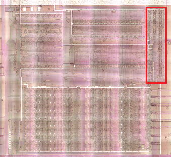
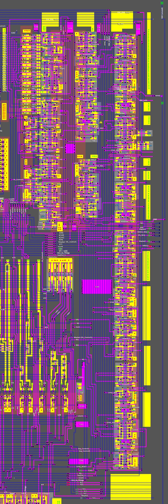
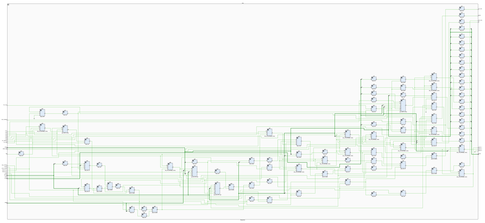
Sequencer Inputs
| Signal | From | Description |
|---|---|---|
| CLK1 / ADR_CLK_N | External | To g84 only; CLK2/1 are coupled by complement for g84, converting this DFF to negedge. |
| CLK2 / ADR_CLK_P | External | To g84 only |
| CLK4 / DATA_CLK_N | External | |
| CLK6 / INC_CLK_P | External | See huge1 module |
| CLK8 / MAIN_CLK_N | External | |
| CLK9 / MAIN_CLK_P | External | |
| SYNC_RESET | External | Port T12; Synchronous reset means that it is only applied during a certain phase value of some CLK |
| RESET | External | Port T13; Unconditional and instantaneous reset, regardless of CLK |
| OSC_STABLE (deprecated signal name Clock_WTF) | External | Port T15. To nand g59 |
| NMI (deprecated signal name Unbonded) | External | Port T16. NMI |
| WAKE | External | Port B25 |
| BUS_DISABLE (deprecated signal name Maybe1 | External | Port R3. 1: Bus disable |
| MMIO_REQ | External | Port R4. See shielded module |
| IPL_REQ | External | Port R5. See shielded module |
| IPL_DISABLE (deprecated signal name Maybe2) | External | Port R6. 1: IPL disabled; See shielded module |
| Seq_Control1 | IRQ Logic | To g42; 1: Wake up after an interrupt. Used in HLT opcode processing. |
| Seq_Control2 | Bottom | To nand g79 |
| d93 | Decoder1 | To g52, g78 |
| d99 | Decoder1 | To g80, g91, g94 |
| d100 | Decoder1 | To g46 |
| d101 | Decoder1 | To nand g65 |
| d102 | Decoder1 | See huge1 module |
| w6 | Decoder2 | Goes to WR |
| w11 | Decoder2 | See shielded module |
| w18 | Decoder2 | To g26 |
| w20 | Decoder2 | To not g22 |
| w26 (LoadIR) | Decoder2 | See huge1 module. Also: g26, g39 |
| w32 | Decoder2 | To not g18 |
| w33 | Decoder2 | To not g20 |
| w40 | Decoder2 | To g38 |
| x41 | Decoder3 | To g87, g94 |
| ALU_Out1 | ALU | 1: Skip branch; To nor g24 |
| IR | IR | Used to form the inputs of Decoder1. IR3 and IR4 are also used in other places. |
Sequencer Outputs
| Signal | To | Description |
|---|---|---|
| a[25:0] | Decoder1 | Decoder1 inputs |
| CLK_ENA (deprecated signal name LongDescr) | External | See g49 |
| OSC_ENA (deprecated signal name XCK_Ena) | External | Port T14 |
| RD | External | Port R1 |
| WR = w6 | External | Port R2 |
| MREQ | External | Port R7 |
| nCLK4 | ~CLK4 | |
| SeqOut_1 | Bottom | |
| SeqOut_2 | Decoder2, Decoder3 | |
| SeqOut_3 | GND -> Not connected |
Map
LR->TD order.
| Row | Blocks |
|---|---|
| 1 | not (x18), not, nand, not, nand, not, nand, nor, nor, hmm1, not |
| 2 | nor3, not, aoi_1, not, not, huge1, not, module3, module3, module3, module3, hmm2, not, not |
| 3 | module3, iwantsleep, not, nor, module3, nor3, not, module4_2, nor3, not, aoi_2, not, module3, hmm3, nor |
| 4 | module3, module3, nand, nor, not, module4, module3, not, nand, not, module3, module4, not, nand3, module4, shielded, not, module3, not, nor, module4, nor, nand, nand, not, not, nor4, module3, module3, not, nor, not, module4, nand, comb4, module4, not, comb5, not |
| 5 | not, nor |
module3 - dff_posedge_comp
DFF on a complementary CLK (Dual Rails).
Since the polarity of CLKs is now known (CLK9 = CLK, CLK8 = CCLK), we can say for sure that it is posedge DFF.
In fact, when using Dual Rails, you can easily turn a posedge DFF into a negedge by simply rearranging the CLK complement signals.
(and moreover this is what is done for g84, turning it into negedge dff)
A distinctive feature of the circuits that do Edge Detection is the two serial MUX's that are opened complementary to the CLK. Using black magic and propagation delay - the edge of the signal is caught.
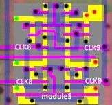
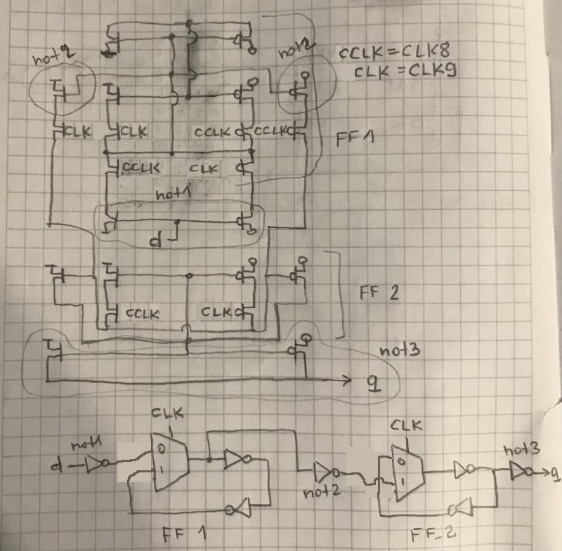
Note: If the DFF input goes to a MUX, which opens at CLK=0 by a P-type MOSFET, it is a posedge DFF.
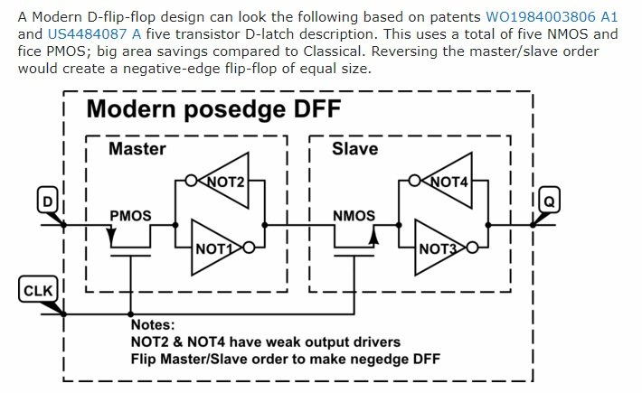
module4 - rs_latch
A typical static latch, but made quite compact. The impressive gates on the FlipFlop, where the value is stored, are also a distinguishing feature.
Also: reset input in inverse polarity (#RESET).
⚠️ The module design is such that reset overrides set if both are set at the same time. Keep this in mind when making your HDL implementation.
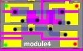
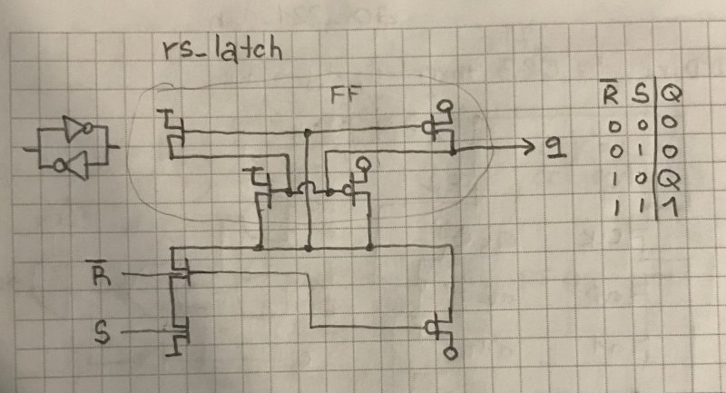
module4_2 - rs_latch2
Initially it was mistaken for module4, but after a detailed study it became clear that the lower part is different.
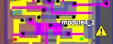
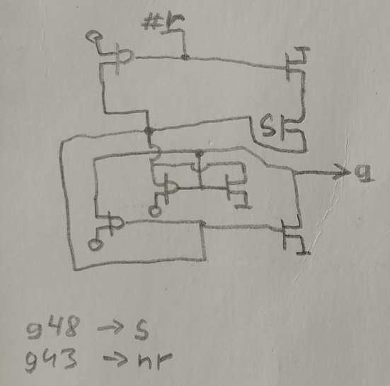
This is essentially the same rs_latch (see above), but with the inputs rearranged. The cell occurs in a single instance (g49) and Issue #219 was associated with it.
(I rechecked all the other modules4).
aoi_1 - aoi_21
1 AND x2 to OR inverted.
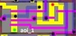
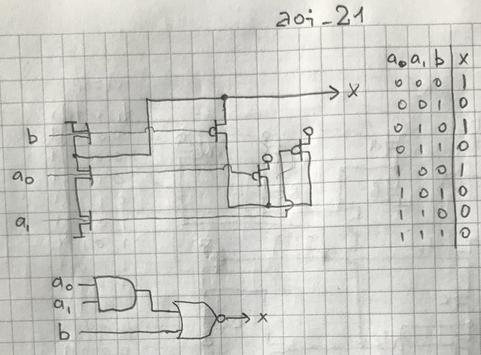
aoi_2 - aoi_21
1 AND x2 to OR inverted.
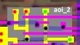
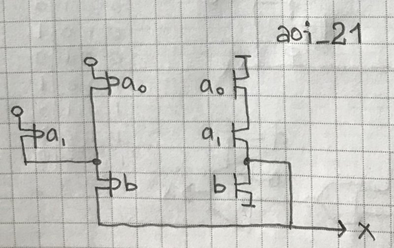
huge1 - latchr_comp
Latch with Active-High reset and complementary set enable, complementary CLK.
A rather complicated circuit to master:
- In the middle is a FlipFlop made of not and nor (nor is used for resetting)
- Input value can be written to FlipFlop only if CLK=1 and LD=1
- When LD=0 the FlipFlop value is updated with the old value
- The output contains a DLatch with a gate memory that opens when LD=0 (so that the old value is returned during the write (LD=1))
- So the written value becomes relevant when LD 1->0 changes (when the output latch opens and is updated with the value from FlipFlop). The same applies to resetting if you do it at the same time as LD=1.
- The whole thing is complicated by the complementary layout of the LD and CLK signals.
By the way, there are 2 not in the circuit to form the complement, one of which takes CLK6 signal as input and the second not takes LoadIR signal as input.
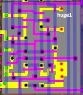
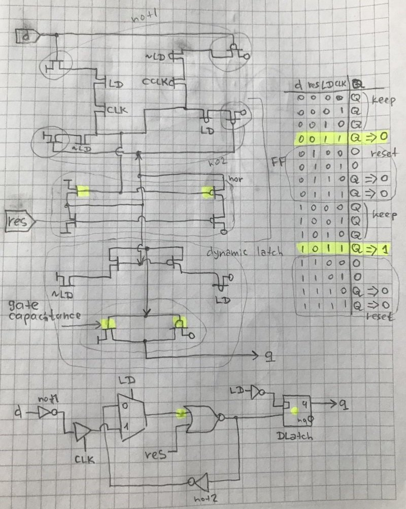
hmm1 - oai_21
1 OR x2 to AND inverted.
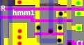
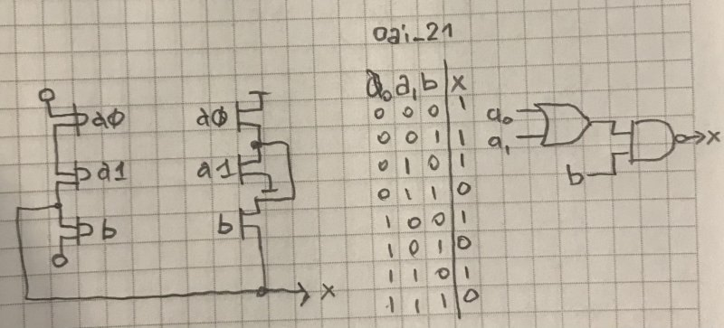
hmm2 - aoi_31
1 AND x3 to OR inverted.
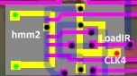
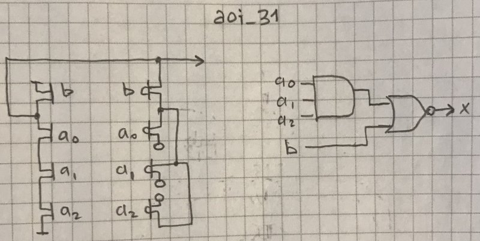
hmm3 - latch_comp
Latch, complementary CLK.
Latch means that the value is written on the CLK level, not on the edge of the signal, as in DFF.
Output in inverse polarity (#Q).
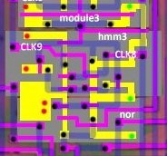
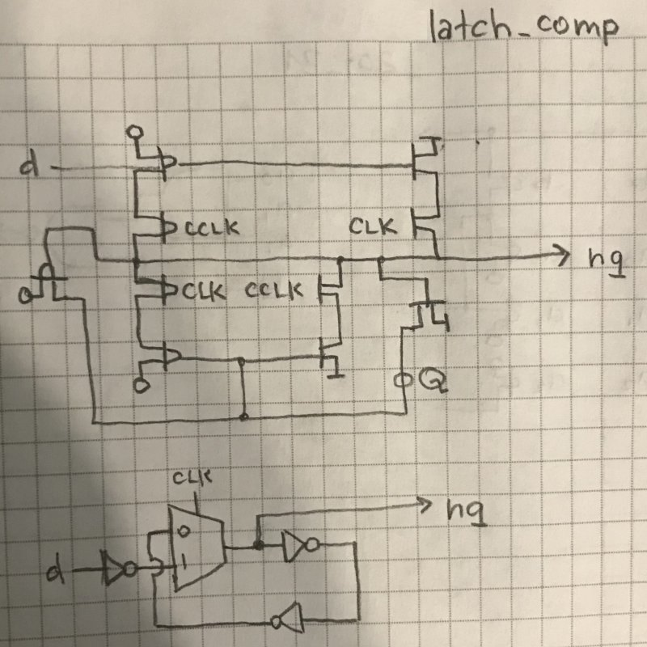
⚠️ Note that CLK comes to this cell in complement, relative to the other DFFs. This cell is used to edge detect the NMI signal (or more precisely its derivative /NMI obtained from g53).
iwantsleep - oai_21
1 OR x2 to AND inverted.
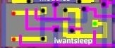
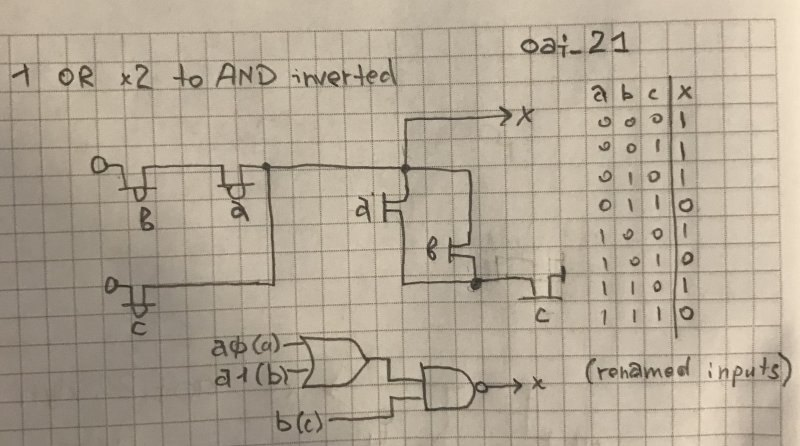
shielded - mreq
Very cleverly twisted combined logic. Bravo, SHARP engineers!
This module is essentially used to generate the #MREQ signal. Below is not to invert it into a MREQ signal and output it to the outside.
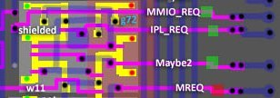
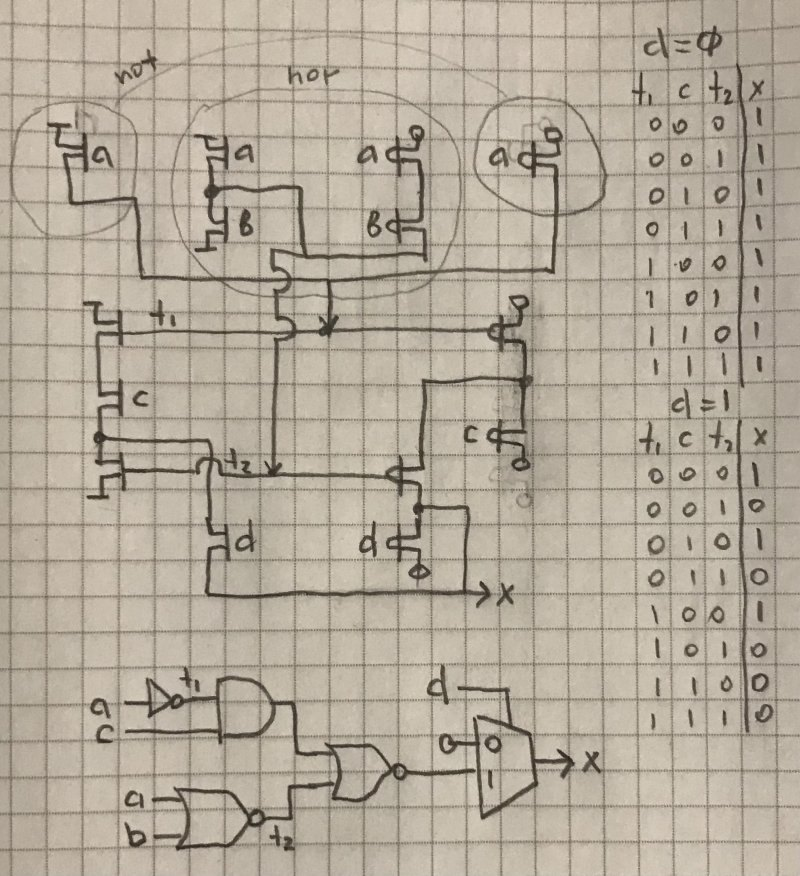
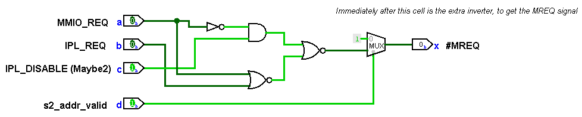
comb4 - aoi_221_dyn
2 AND x2 to OR-3 inverted, dynamic.
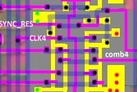
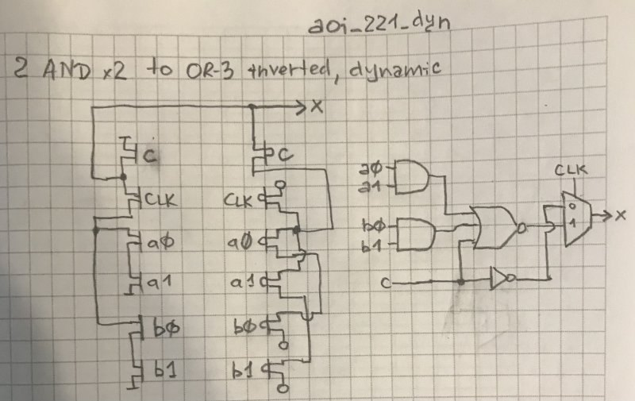
comb5 - aoi_22_dyn
2 AND x2 to OR inverted, dynamic.
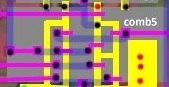
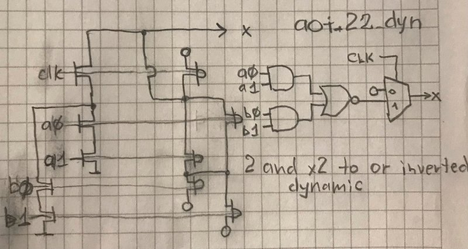
Logic behind additional Decoder inputs
From @Gekkio's research we know the purpose of additional inputs of Decoder1.
The first two are obvious: Sequencer is in interrupt sequence mode or in opcode processing state from CB table.
The other three are "State[3]", encoding a timestamp for executing long instructions. Initially it appeared to be a counter, but it turns out that setting the states is more complicated and so the bits are simply called State0-2.
| Extra Decoder1 Input | Meaning |
|---|---|
| a1 | 1: IRQ sequence in progress (Gekkio: intr_dispatch) |
| a3 | 1: CB Opcode prefix (Gekkio: cb_mode) |
| a20 | #State2 (0: state2 active) |
| a22 | #State1 (0: state1 active) |
| a24 | #State0 (0: state0 active) |
(the names of the states given here in inverse polarity, because Gekkio takes their names from the corresponding DFFs but they go to the specified decoder inputs in inverse polarity).
Logisim
An adaptation of the HDL schematic in Logisim has been made for better understanding.
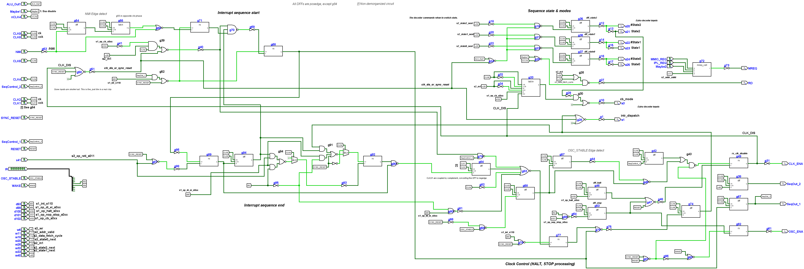